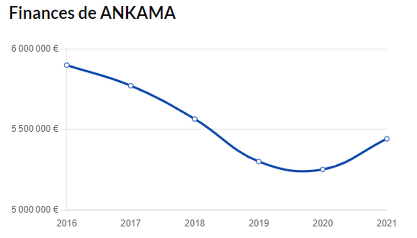
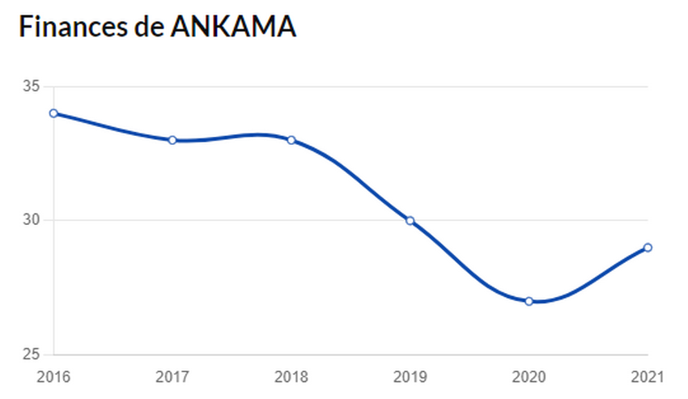
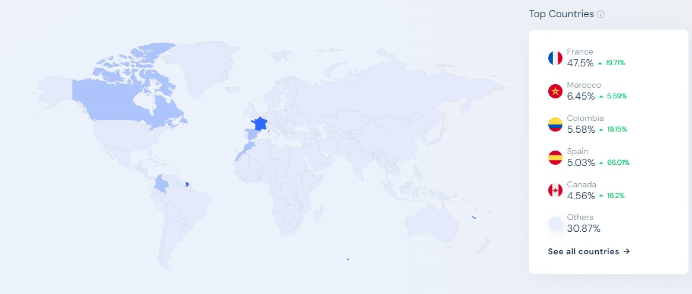

ANKAMA
ÉCONOMIE
Contexte
L’entreprise Ankama a été créée le 15 mai 2001 à Roubaix sous la forme d’une « société par action simplifiée » qui s’engage dans le développement web. Elle est fondée par Camille Chafer (directeur technique), Anthony Roux (directeur artistique) et Emmanuel Darras (directeur commercial) qui sont issus tous les trois de la même agence web. C'est alors que Ankama commence sa première activité qui a été la confection de sites Internet pour les professionnels.
FONCTIONNEMENT ET CHOIX ECONOMIQUES
ORGANISATION
ÉVOLUTION DE LA DIRECTION D'ANKAMA
LA DIRECTION AVANT
| Direction | Personne Titulaire | Date |
|---|---|---|
| Présidence | Anthony Roux | 19 Janvier 2005 jusqu'au 7 Janvier 2015 |
| Direction Générale | Emmanuel Darras | 20 Août 2013 jusqu'au 28 Août 2013 |
| Cogérance | Camille Chafer | 3 Février 2009 jusqu'au 14 Août 2010 |
LA DIRECTION APRÈS
| Direction | Personne Titulaire | Date |
|---|---|---|
| Présidence | Société Adone | Depuis le 7 janvier 2015 |
| Direction Générale | Camille Chafer | Depuis le 14 Août 2010 |
| Cogérance | Emmanuel Darras | Du 3 Février 2009 au 18 janvier 2013 |
ÉVOLUTION SALARIÉS
L'entreprise a beaucoup évolué aussi dans l'organisation de ses salariés au fur et à mesure des années tout en respectant une égalité au niveau du genre.
UN INDICE DE 95/100 SUR L'ÉGALITÉ HOMME FEMME
- Un indicateur relatif à l'écart de rémunération hommes-femmes de 36/40
- Un indicateur relatif à l'écart de taux d'augmentation individuelles de 35/35
- Un indicateur relatif au nombre de salariés du sexe sous représenté parmi les salariés ayant perçu les plus hautes rémunérations de 10/10
ÉVOLUTION DES FINANCES DE 2016 JUSQU'EN 2021
En fonction du chiffre d'affaire :
En fonction de l'effectif moyen de salariés par filières :
ÉVOLUTION SUR LE MARCHÉ
La société Ankama, acteur majeur de l'industrie du divertissement en France, a connu une évolution significative de ses chiffres d'affaires au cours des dernières années. Cette section se penche sur l'évolution des revenus de l'entreprise, met en lumière les marchés dans lesquels elle opère et présente des graphiques clés pour mieux comprendre ces tendances.
Les tendances et marchés d’Ankama se situent exclusivement sur des zones géographiques Francophones, et très peu à l'international
Zones géographiques principales du marché d'Ankama
On remarque une croissance de presque 10 millions du chiffre d'affaires pour Ankama Games, la plus grosse filiale d’Ankama, pour un endettement à la hausse de seulement quelques milliers de 2019 à 2020.
Le pic de revenus d'Ankama se situe clairement entre 2005 et 2007. En 2005, la société a réalisé un chiffre d'affaires proche du million d'euros, marquant une étape importante. En 2006, le chiffre d'affaires a atteint près de 15 millions d'euros, avant de redescendre à 13 millions en 2007.
ACTIVITÉS
UN DOMAINE D'ACTIVITÉS VASTE
Ankama est une entreprise commerciale regroupant de nombreuses filières variées sur de nombreux domaines du secteur tertiaire: Ankama Games (et Ankama Studio), s’occupant de la création et du développement de jeux vidéos, l’un des principaux domaines d’Ankama: Jeux mobile ou PC, dont les plus connus sont Dofus et Wakfu; Ankama Animation, s’occupant de séries et films animées, comme la série animée Wakfu, ou encore Ankama Édition, s’occupant des manga comme Radiant, ou des livres sur l’univers du Krosmoz, un univers plein d’histoire, de personnages, d'événements et de magie, ou se déroule la majorité de leurs projets.
GRANDS PROJETS RÉALISÉS
DOFUS
L'un de ces projets le plus connu d'Ankama est Dofus: Un MMORPG (jeu de rôle massivement multijoueur), sorti le 1er septembre 2004, et ayant connu une énorme popularité, dans les années 2000. Jusqu'à environ 2010, Dofus était l’un des MMORPG les plus joués en France, surpassant parfois des jeux tel que World Of Warcraft en France, alors qu’il était numéro 1 mondiale.
WAKFU
Suite au nombre de joueurs décroissant sur Dofus entre 2009 et 2012 suite à des décisions qui n’ont pas plu au joueurs, Ankama s'est lancé dans un nouveau projet: Wakfu, qui est sorti en 2014. Dans le même univers que Dofus, avec des fonctionnalités améliorées, de meilleurs graphismes, des cinématiques, un système de politique: Wakfu était une version améliorée de Dofus qui a plu au joueurs: Environ 8000 joueurs par jours, plus de 800 000 joueurs au total: Malgré qu’il y ai moins d'intérêt pour les MMORPG, Wakfu connais quand même une assez forte croissance avec une communauté active.
RADIANT
En dehors de ces projets de jeux vidéos, Ankama a différents autres projets, notamment un manga d'aventure: Radiant, qui lui ne se passe pas dans le Krosmoz. Radiant est un manga dont le héro est Seth, un des rares être humain à avoir survécu à une attaque de Nemesis: des créatures sanguinaires qui exterminent tout ce qu’elles voient. Suite à cette immunité, Seth a décidé de devenir chasseur de Nemesis. Sorti en 2013, Radiant a connu une assez grande popularité, et en est actuellement à son tome 18. C’est aussi le premier manga français édité au Japon et adapté en animé par un studio japonais